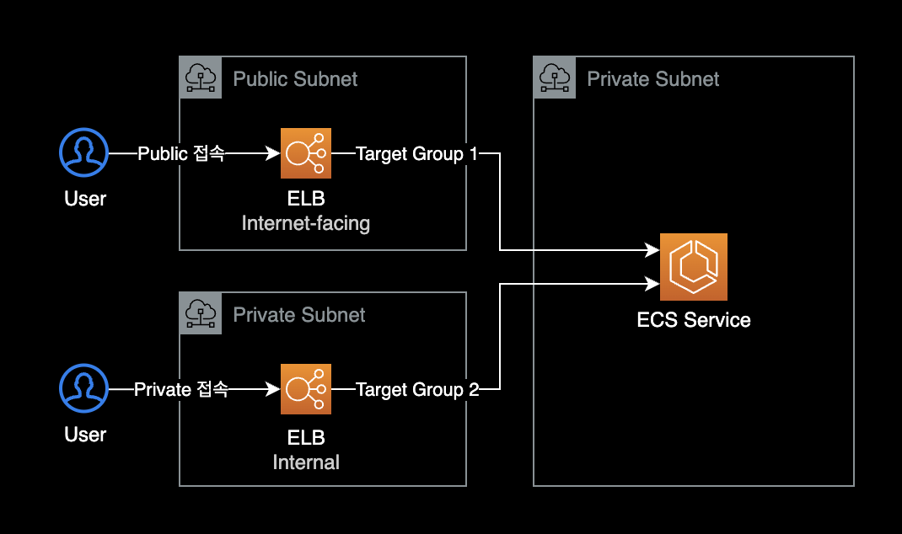

ECS 서비스에 여러개 로드밸런서 연결
개요
하나의 ECS Service에 2개 이상의 ELB를 연결하는 방법
사용 예시
동일한 ECS 서비스에 Public ALB와 Private ELB를 동시에 연결해야 하는 경우

설정방법
이 작업은 기본적으로 AWS 콘솔에서는 설정 불가능합니다.
AWS CLI, Task Definition, CloudFormation 템플릿 변경을 통해서만 설정 가능합니다.
기존에 생성한 ECS 서비스의 로드 밸런서 구성을 수정하려면 AWS CLI를 통해 UpdateService API를 사용해야 합니다.
1. 타겟그룹과 ELB 생성
AWS 콘솔을 사용해서 추가로 연결할 Target Group과 ELB를 미리 생성합니다.
2. AWS CLI
이후 AWS CLI를 사용해 ECS 서비스에 Target Group을 추가로 연결합니다.
하나의 Service에 2개의 로드밸런서(타겟 그룹)를 연결하는 AWS CLI 명령어입니다.
$ aws ecs update-service \
--cluster financial-external-service \
--service external-service \
--load-balancers targetGroupArn="arn:aws:elasticloadbalancing:ap-northeast-2:111122223333:targetgroup/YOUR-FIRST-TG-NAME/YOUR_TG_1_ARN",containerName="main",containerPort=8080 targetGroupArn="arn:aws:elasticloadbalancing:ap-northeast-2:111122223333:targetgroup/YOUR-SECOND-TG-NAME/YOUR_TG_2_ARN",containerName="main",containerPort=8080
참고자료
Amazon ECS 서비스, 이제 다중 로드 밸런서 대상 그룹 지원
API Reference: UpdateService
AWS CLI를 사용하는 경우 참고할만한 ECS UpdateService의 API Reference.